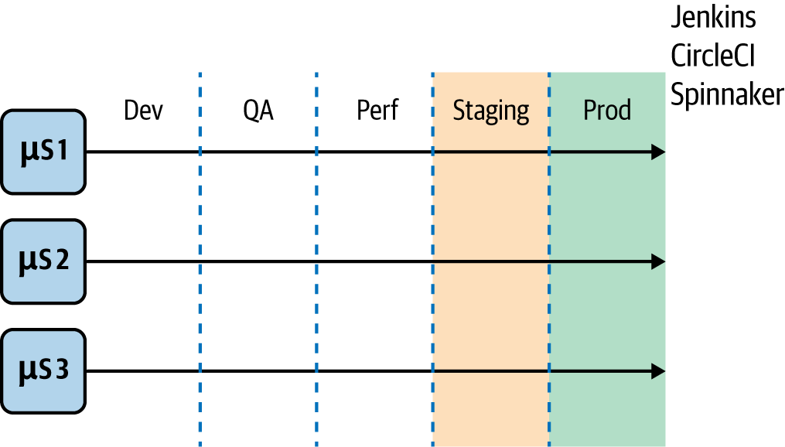
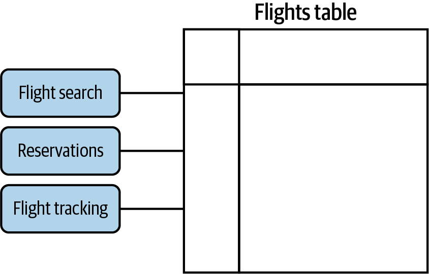
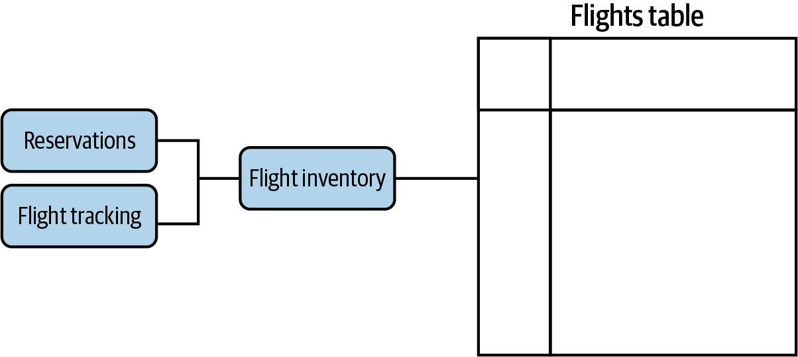
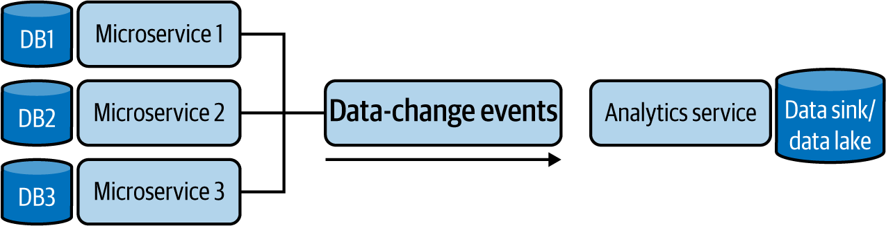
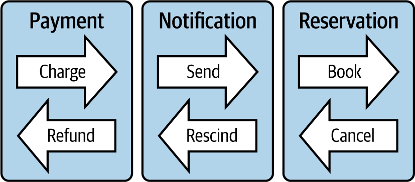
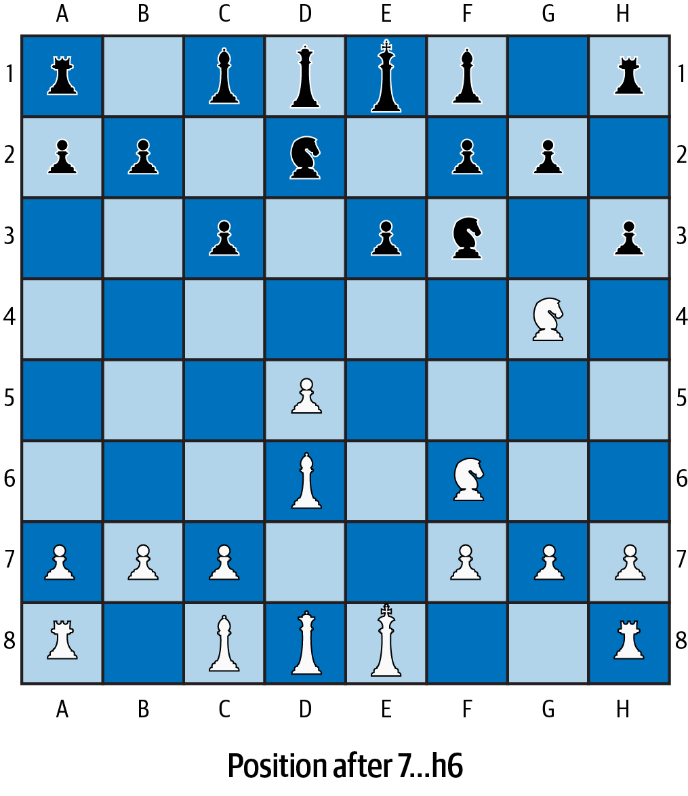
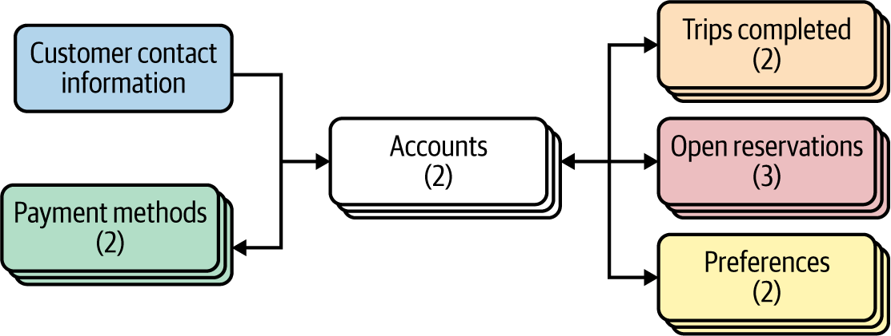
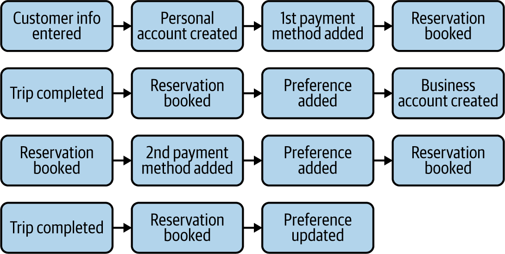

Trong chương này, chúng ta sẽ tìm hiểu vì sao microservices cần “sở hữu dữ liệu của riêng mình” và điều đó có ý nghĩa gì đối với kiến trúc của bạn. Chúng ta sẽ thảo luận khi nào và bằng cách nào nên dùng những pattern quan trọng nhất cho quản lý dữ liệu trong microservices: delegate, data lake, Saga, Event Sourcing và Command Query Responsibility Segregation (CQRS). Trong khi bàn về các chủ đề quan trọng này, chúng ta cũng sẽ cố gắng minh họa chúng bằng các ví dụ thực tế sử dụng dự án mẫu của mình.
Khi bước vào phát triển microservices trong thực tế, một trong những thách thức sớm mà hầu như ai cũng gặp là xử lý dữ liệu. Nếu không vì vô số thách thức của quản lý dữ liệu trong không gian này, việc biến các hệ thống cài đặt monolith phức tạp thành những microservice liên kết lỏng, có kích thước vừa phải và dễ quản lý hẳn đã khá dễ dàng.
Các cân nhắc thiết kế cho mô hình logic và mô hình vật lý trong việc hiện thực microservices không giống với việc thiết kế bảng dữ liệu cho các ứng dụng monolith N tầng truyền thống. Trong chương này, chúng ta sẽ thấy vì sao những khác biệt đó xuất hiện, người thực hành microservices thường dùng những pattern nào, và nên áp dụng những kỹ thuật gì để xử lý phần độ phức tạp bổ sung mà chúng ta phải đối mặt khi hiện thực các hệ thống microservices.
Trong Chương 4, chúng ta đã nhắc rằng Sam Newman gợi ý microservices nói chung nên:
Liên kết lỏng với nhau; điều này cũng có nghĩa là có thể triển khai độc lập
Có tính kết dính cao đối với các năng lực bên trong từng microservice
Khi các dịch vụ liên kết lỏng với nhau, một thay đổi ở dịch vụ này không nên dẫn đến thay đổi ở dịch vụ khác. Hẳn bạn còn nhớ rằng lợi ích chính của kiến trúc microservices là tăng tốc độ nhưng vẫn hài hòa với an toàn và chất lượng ở quy mô lớn. Và lợi ích này đạt được bằng cách loại bỏ, hoặc ít nhất là giảm bớt, nhu cầu phối hợp giữa các microservice. Một khía cạnh quan trọng và rất cụ thể của sự liên kết lỏng này là thứ chúng ta gọi là khả năng triển khai độc lập: có thể thay đổi một microservice và triển khai nó mà không cần thay đổi hay triển khai bất kỳ phần nào khác của hệ thống, hay bất kỳ microservice nào khác. Điều này cực kỳ quan trọng và trở nên rất dễ thấy nếu ta hình dung một deployment pipeline điển hình trong kiến trúc microservices trông như thế nào. Trong Hình 5-1, bạn có thể thấy một biểu diễn đồ họa đơn giản hóa của các deployment pipeline cho nhiều microservice đi qua nhiều môi trường khác nhau trên đường tiến tới production.

Quy trình phát hành mã qua deployment pipeline sẽ trở nên phức tạp và mong manh hơn rất nhiều nếu việc triển khai một microservice kéo theo hiệu ứng dây chuyền buộc phải triển khai lại các phần khác của ứng dụng. Những phụ thuộc chéo như vậy có thể làm tổn hại cả tốc độ lẫn độ an toàn của toàn bộ hệ thống. Ngược lại, nếu chúng ta có thể bảo đảm rằng luôn có thể triển khai từng microservice một cách độc lập, không phải lo về các hiệu ứng dây chuyền, thì chúng ta có thể giữ cho việc triển khai của mình vừa linh hoạt vừa an toàn.
Có thể có nhiều lý do khiến bạn không thể làm cho việc triển khai microservices của mình độc lập, nhưng trong bối cảnh quản lý dữ liệu, thủ phạm phổ biến nhất là nhiều microservice cùng đồng sở hữu một không gian dữ liệu . Kiểu đồng sở hữu này có thể phá vỡ tính liên kết lỏng của chúng và làm suy yếu khả năng triển khai mã một cách độc lập của chúng ta.
Chúng ta sẽ bắt đầu khám phá các kỹ thuật để tránh tình trạng đồng sở hữu dữ liệu giữa các microservice bằng cách bàn về khái niệm dữ liệu được nhúng trong microservice ở các phần tiếp theo.
Trong kiến trúc monolith, việc chia sẻ dữ liệu là một thực hành rất phổ biến. Trong các hệ thống legacy điển hình, kể cả những hệ thống có tính mô-đun hơn theo kiểu kiến trúc hướng dịch vụ (SOA), các thành phần mã cùng đồng sở hữu dữ liệu trên nhiều dịch vụ là chuyện thường thấy. Thực tế, điều đó gần như được mong đợi: dữ liệu dùng chung là một pattern chính để tích hợp các phần mô-đun hóa khác nhau của một hệ thống lớn hơn. Đôi khi khi nói đến “monolith”, người ta tưởng tượng rằng nó không có mô-đun hóa nào, rằng nó thật sự chỉ là một khối lớn không được chia thành thành phần nào cả. Điều đó không đúng. Từ lâu các lập trình viên đã biết rằng việc chia một codebase lớn thành những phần nhỏ hơn mang lại lợi ích rất lớn cho tổ chức mã và khả năng quản lý. Nhưng một thiếu sót then chốt trước thời microservices là các mô-đun mà monolith được chia thành không thể triển khai độc lập. Điều đó khiến chúng không thực sự liên kết lỏng nếu xét dưới góc độ chi phí phối hợp. Trường hợp điển hình là do sự gắn kết ở lớp dữ liệu mà các thiết kế SOA chưa bao giờ đạt được khả năng triển khai độc lập, và do đó cũng không đạt được khả năng vừa đi nhanh vừa đi an toàn ở quy mô lớn hơn.
Hãy xem một ví dụ về cách vấn đề có thể xuất hiện. Giả sử nhiều microservice cùng chia sẻ quyền sở hữu một bảng khách hàng trong cơ sở dữ liệu, như minh họa trong Hình 5-2 ở phần “Data Embedding và Mẫu Data Delegate”. Ở đây, “ownership” có nghĩa là các microservice khác nhau cùng đọc và sửa đổi dữ liệu từ bảng dùng chung đó.
Hãy tưởng tượng một microservice tìm kiếm chuyến bay cần thay đổi kiểu dữ liệu của một trường trong bảng dùng chung. Nếu nhóm phát triển microservice đó cứ thế thực hiện, chẳng hạn đổi từ integer sang float hoặc tương tự như vậy, thay đổi này có thể làm hỏng microservice quản lý đặt chỗ hoặc theo dõi chuyến bay, vì chúng cũng truy cập cùng bảng đó và có thể đang dựa vào giả định rằng trường ấy mang giá trị của một kiểu nhất định. Để tránh tạo ra bug, khi chúng ta thay đổi mô hình dữ liệu vì nhu cầu của microservice tìm kiếm chuyến bay, chúng ta cũng sẽ phải thay đổi tương ứng mã của microservice đặt chỗ hoặc thậm chí cả những microservice khác. Và chúng ta sẽ phải triển khai lại tất cả các microservice bị ảnh hưởng trong một nỗ lực phối hợp đồng thời. Hiệu ứng dây chuyền do lớp dữ liệu thay đổi là chuyện rất thường gặp khi nhiều thành phần cùng đồng sở hữu dữ liệu, và chúng có thể gây ra sự gắn kết đáng kể giữa các dịch vụ khác nhau, điều này rõ ràng là một vấn đề đối với khả năng triển khai độc lập.
Việc chia sẻ không gian dữ liệu là một trong những thứ giết chết khả năng phát triển độc lập và triển khai độc lập trong các hệ thống monolith. Ngược lại, trong kiến trúc microservices, khả năng triển khai độc lập được nhấn mạnh như một giá trị cốt lõi, và vì vậy việc chia sẻ dữ liệu bị cấm: microservices không bao giờ được phép cùng đồng sở hữu trách nhiệm đối với một không gian dữ liệu trong cơ sở dữ liệu. Phải luôn rất rõ microservice nào sở hữu bất kỳ dataset nào trong cơ sở dữ liệu, hay như cách chúng ta thường phát biểu nguyên tắc này: microservices phải sở hữu, tức nhúng, dữ liệu của chúng.
Dù việc nhúng dữ liệu của riêng mình là một quy tắc mang tính phổ quát cho microservices, vẫn có một số sắc thái quan trọng của nguyên tắc này mà chúng ta cần hiểu thật rõ. Trong phần tiếp theo, chúng ta sẽ bàn chi tiết hơn về một cân nhắc như vậy.
Khi xây dựng những ứng dụng phức tạp, chúng ta thường có thể đi đến chỗ dùng nhiều loại cơ sở dữ liệu khác nhau. Các dataset trong những cơ sở dữ liệu đó, ví dụ như “bảng” trong cơ sở dữ liệu quan hệ, không bao giờ nên có nhiều microservice cùng đồng sở hữu. Khi bạn xây hệ thống lớn, cuối cùng bạn có thể có tới hàng trăm microservice. Vậy điều đó có nghĩa là chúng ta phải triển khai hàng trăm cụm Cassandra, Postgres, Redis hay MySQL riêng biệt hay không? Các nhóm hiện thực microservices cần sự rõ ràng về việc nên đẩy khái niệm “microservices phải nhúng dữ liệu của chúng” đi xa tới đâu. Bản thân cơ sở dữ liệu đã là những hệ thống phần mềm phức tạp; chúng không chỉ được triển khai trên một máy chủ, mà đa số cơ sở dữ liệu được triển khai trên nhiều máy chủ để có khả năng dự phòng, độ tin cậy và khả năng mở rộng, có thể là hàng chục máy chủ trải trên nhiều vùng địa lý khác nhau. Khi chúng ta đưa ra khái niệm nhúng dữ liệu, các nhóm sẽ tự hỏi liệu họ có cần tạo ra những cụm cơ sở dữ liệu khổng lồ cho từng microservice mà họ tạo ra hay không.
Điều này có thể trở thành một vấn đề rất lớn. Nếu kiến trúc microservices đòi hỏi một số lượng khổng lồ cụm cơ sở dữ liệu, một hoặc nhiều cụm cho mỗi microservice, thì đây hẳn sẽ là phong cách kiến trúc đắt đỏ nhất trong lịch sử ngành của chúng ta, hoặc ít nhất là gần như vậy. May mắn thay, hoàn toàn không phải như thế. Tính độc lập của dữ liệu không có nghĩa là mỗi microservice phải tự triển khai một cụm cơ sở dữ liệu riêng, có khả năng mở rộng, dự phòng và phức tạp của riêng nó.
Tính độc lập trong quản lý dữ liệu trước hết là chuyện không để các luồng dữ liệu “chồng lấn” lên nhau. Nó liên quan đến khả năng mang microservice của bạn đi và triển khai cùng một cài đặt cơ sở dữ liệu khác nếu cần. Nhưng bạn không nhất thiết phải triển khai từng dịch vụ với một cụm cơ sở dữ liệu khác nhau ngay từ đầu. Chi phí là một cân nhắc quan trọng, và sự đơn giản cũng vậy. Chừng nào nhiều microservice chưa cùng truy cập, đặc biệt là cùng sửa đổi, một không gian dữ liệu giống nhau, thì yêu cầu về tính độc lập của dữ liệu vẫn được giữ nguyên.
Hãy xem một ví dụ trong bối cảnh hệ thống đặt chỗ trực tuyến của chúng ta. Ban đầu, chúng ta sẽ nhìn vào trường hợp hệ thống được xây theo kiến trúc monolith N tầng truyền thống. Một ứng dụng như vậy vẫn sẽ được chia thành những mô-đun khác nhau, nhỏ hơn. Các mô-đun này thậm chí còn có thể được triển khai như các dịch vụ qua mạng. Và chúng chắc chắn cũng có thể đủ nhỏ để được gọi là “micro”. Tuy nhiên, điều đó không nhất thiết khiến chúng trở thành microservices. Chúng chỉ có thể được coi là microservices nếu những thành phần này được mô-đun hóa với mục tiêu loại bỏ phối hợp, và cụ thể hơn là nếu chúng liên kết lỏng và có thể triển khai độc lập. Nếu các dịch vụ bị chia ra một cách tùy tiện và không liên kết lỏng, chúng ta không thể gọi một hệ thống như vậy là ví dụ của kiến trúc microservices.
Trong kịch bản của chúng ta, được minh họa trong Hình 5-2, có ba dịch vụ đều cần dữ liệu từ bảng “flights”: tìm kiếm chuyến bay, quản lý đặt chỗ và theo dõi chuyến bay.

Rõ ràng, dựa trên phân tích ở đầu chương này, thiết kế dữ liệu như vậy là có vấn đề đối với kiến trúc microservices, vì ba dịch vụ đang cùng chia sẻ một không gian dữ liệu và do đó làm tổn hại khả năng triển khai độc lập.
Làm sao để khắc phục tình huống này? Trường hợp cụ thể này thật ra khá dễ xử lý, và chúng ta có thể dùng kỹ thuật đơn giản là giấu dữ liệu dùng chung phía sau một dịch vụ delegate, như minh họa trong Hình 5-3.

Về bản chất, điều chúng ta làm ở đây là tuyên bố dịch vụ flight inventory là dịch vụ có thẩm quyền đối với mọi thứ liên quan đến thông tin chuyến bay. Hơn nữa, bất kỳ dịch vụ nào cần thông tin về chuyến bay hoặc cần cập nhật thông tin chuyến bay đều phải gọi tới endpoint thích hợp trong dịch vụ flight inventory. Nếu chúng ta hiện thực một lời gọi API tra cứu chuyến bay đủ linh hoạt trong dịch vụ flight inventory, thì dịch vụ tìm kiếm chuyến bay trước đây đơn giản sẽ trở thành một phần chức năng của dịch vụ flight inventory mới. Quan trọng hơn, điều này cho phép chúng ta ngừng truy cập trực tiếp bảng flights từ các dịch vụ đặt chỗ và theo dõi chuyến bay. Từ đây trở đi, mọi thông tin mà chúng cần về một chuyến bay đều có thể lấy qua dịch vụ flight inventory.
Ví dụ, khi hệ thống đặt chỗ cần biết một chuyến bay còn đủ ghế hay không, nó sẽ gửi query tương ứng tới dịch vụ flight inventory thay vì query trực tiếp bảng flights trong cơ sở dữ liệu. Hoặc khi dịch vụ theo dõi chuyến bay cần biết hoặc cập nhật vị trí của máy bay trong một chuyến bay, nó cũng sẽ làm điều đó thông qua dịch vụ flight inventory, chứ không truy cập và sửa trực tiếp bảng flights. Theo cách này, dịch vụ flight inventory trở thành delegate giấu dữ liệu phía sau chính nó, bao đóng dữ liệu và bọc quanh dữ liệu. Điều đó sẽ chấm dứt việc nhiều dịch vụ cùng chia sẻ một bảng dữ liệu.
Xin lưu ý rằng trong pattern này, khi nhiều dịch vụ cần truy cập cùng một dữ liệu, chúng ta không nhất thiết phải biến một trong số chúng thành delegate. Trong giải pháp trước, chúng ta đã biến dịch vụ tìm kiếm chuyến bay thành một dịch vụ inventory và để nó bao đóng bảng flights. Nhưng chúng ta cũng có thể đưa vào một dịch vụ hoàn toàn mới. Ví dụ, ta có thể tạo một dịch vụ mới tên là flight inventory và để microservice tìm kiếm chuyến bay tham chiếu tới nó, giống như cách dịch vụ đặt chỗ và theo dõi đang làm.
Cách tiếp cận đưa vào một delegate rất thanh nhã và sẽ hiệu quả trong nhiều trường hợp khác nhau. Tiếc là không phải mọi nhu cầu chia sẻ dữ liệu đều có thể được xử lý theo cách này. Sẽ cực kỳ ngây thơ nếu nghĩ rằng pattern chúng ta vừa thảo luận có thể dùng cho mọi kịch bản. Có những use case mà chức năng cần thiết một cách chính đáng phải truy cập hoặc sửa dữ liệu vượt qua ranh giới microservice. Ví dụ của những nhu cầu như vậy có thể thấy trong bối cảnh analytics, kiểm toán dữ liệu và machine learning, cùng nhiều trường hợp khác. Các cách tiếp cận giao dịch cơ sở dữ liệu truyền thống cũng đòi hỏi việc khóa trên dữ liệu dùng chung.
May mắn thay, vẫn có những giải pháp hợp lý cho các use case khác đó, những giải pháp cũng có khả năng tránh được việc chia sẻ dữ liệu. Để hiểu các giải pháp trong không gian này, trước tiên hãy cùng khám phá những pattern truy cập dữ liệu khác nhau mà chúng ta thường gặp.
Khi chúng ta cần quyền truy cập chỉ đọc tới dữ liệu phân tán mà không có nhu cầu sửa đổi, như trong các bối cảnh enterprise analytics, machine learning, kiểm toán... thì một giải pháp phổ biến là sao chép dataset từ tất cả các microservice liên quan vào một không gian dùng chung. Không gian dùng chung này thường được gọi là data lake. Xin lưu ý rằng chúng ta đang sao chép dữ liệu, chứ không phải di chuyển nó. Data lake là những nơi nhận dữ liệu chỉ đọc, có thể query. Microservices vẫn giữ vai trò là nguồn có thẩm quyền đối với các dataset tương ứng và tiếp tục là chủ sở hữu chính của dữ liệu. Chúng chỉ đơn giản stream dữ liệu liên quan vào data lake, nơi dữ liệu tích lũy lại và sẵn sàng cho việc truy vấn. Vì mục tiêu toàn vẹn dữ liệu và sự rõ ràng về nguồn gốc dữ liệu, điều quan trọng là chúng ta không bao giờ cập nhật dữ liệu kiểu này theo cách vận hành trực tiếp trong một chỉ mục tổng hợp như data lake. Data lake không bao giờ được coi là hệ cơ sở dữ liệu bản ghi chính thức. Chúng là các kho dữ liệu tham chiếu. Ta có thể thấy một biểu diễn đồ họa tổng quát của cách thiết lập này trong Hình 5-4.

Khi dữ liệu đã được stream từ các kho dữ liệu system of record (SOR), chẳng hạn từ microservices sang các data sink, dữ liệu tổng hợp sẽ được lập chỉ mục theo cách tối ưu cho việc truy vấn. Việc stream dữ liệu từ SOR vào data lake thường được thực hiện bằng một hạ tầng nhắn tin đáng tin cậy. IBM MQ và RabbitMQ đã được dùng nhiều năm trong bối cảnh này; Kafka dường như là giải pháp phổ biến nhất hiện nay, còn Apache Pulsar có lẽ là cái tên mới nổi bật và đáng chú ý nhất trong không gian này.
Data lake và các chỉ mục dữ liệu dùng chung có thể giải quyết nhiều use case chỉ đọc. Nhưng chúng ta nên làm gì khi dữ liệu phân tán không còn là chỉ đọc nữa? Trong phần tiếp theo, chúng ta sẽ khám phá một giải pháp cho các trường hợp mà chúng ta cần sửa đổi dữ liệu theo cách có phối hợp trên các dataset do nhiều microservice sở hữu. Chúng ta sẽ thảo luận cách hiện thực các giao dịch phân tán trong một hệ sinh thái microservices.
Hãy xét một ví dụ từ dự án mẫu hệ thống đặt chỗ trực tuyến của chúng ta. Cụ thể, hãy xem điều gì xảy ra khi ai đó đặt một ghế trên chuyến bay và để hoàn tất việc đặt chỗ đó, chúng ta cần thực hiện một giao dịch phân tán. Đây là một cập nhật có phối hợp trên nhiều microservice phụ trách những việc như dùng dặm thưởng để thanh toán, giữ chỗ ngồi và gửi hành trình qua email cho khách hàng. Những giao dịch như vậy trải qua nhiều microservice: xử lý thanh toán bằng điểm thưởng, đặt chỗ và thông báo. Quan trọng nhất, thông thường chúng ta sẽ muốn hoặc cả ba bước cùng xảy ra, hoặc không bước nào xảy ra cả. Ví dụ, giả sử chúng ta đột nhiên phát hiện chiếc ghế được yêu cầu không còn trống nữa. Có thể khi chúng ta bắt đầu quá trình trừ dặm để thanh toán thì ghế đó còn trống, nhưng đến lúc hoàn tất quá trình thì ai đó đã đặt ghế đó mất rồi. Rõ ràng chúng ta không thể đặt cùng một ghế hai lần, nên phải cân nhắc nên làm gì trong tình huống này. Trong một hệ thống đủ bận, các race condition và lỗi kiểu này là không thể tránh khỏi, nên khi chúng xảy ra, chúng ta cần rollback toàn bộ quy trình. Tối thiểu, chắc chắn chúng ta phải hoàn lại điểm thưởng. Hãy cùng hiểu xem chúng ta sẽ phối hợp một giao dịch phân tán như vậy thế nào.
Trong các ứng dụng monolith truyền thống, một quy trình như vừa mô tả sẽ được quản lý an toàn bằng các giao dịch cơ sở dữ liệu. Cụ thể hơn, việc này có thể được thực hiện bằng các giao dịch cơ sở dữ liệu được cho là thể hiện các đặc tính an toàn của ACID, kể cả khi có lỗi xảy ra. ACID là viết tắt của atomicity, consistency, isolation và durability. Chúng được định nghĩa như sau:
Các bước trong một giao dịch mang tính “tất cả hoặc không gì cả”; hoặc tất cả cùng được thực thi, hoặc không bước nào được thực thi.
Bất kỳ giao dịch nào cũng phải đưa hệ thống từ một trạng thái hợp lệ sang một trạng thái hợp lệ khác.
Việc thực thi song song các giao dịch khác nhau phải cho ra cùng một trạng thái như thể các giao dịch đó được thực thi tuần tự.
Một khi giao dịch đã được commit, tức thực thi hoàn toàn, thì dữ liệu sẽ không bị mất bất chấp những lỗi có thể xảy ra.
Microservices giúp đơn giản hóa việc xây dựng hệ thống an toàn ở quy mô lớn. Tuy nhiên, điều cực kỳ quan trọng cần làm rõ là điều đó không có nghĩa bạn có thể ngăn lỗi không bao giờ xảy ra. Việc hoàn toàn tránh lỗi, dù bằng microservices hay bất kỳ cách nào khác, là điều bất khả thi. Lỗi sẽ luôn hiện diện trong một hệ thống đủ phức tạp. Điều chúng ta cần làm là tính đến chúng và tạo ra cơ chế tự phục hồi. Trong quản lý dữ liệu truyền thống, giao dịch ACID là một ví dụ tuyệt vời cho kiểu tư duy đó. Các hệ thống hiện thực giao dịch ACID mặc định rằng đủ loại lỗi xảy ra liên tục, vì vậy chúng ta thiết kế hệ thống lưu trữ dữ liệu của mình theo cách có khả năng chống chịu trước các lỗi đó.
Tiếc là giao dịch ACID không phải là lời giải khả thi cho các hệ thống phân tán, nơi chức năng được rải trên nhiều microservice được triển khai độc lập qua mạng. Giao dịch ACID thường dựa vào việc dùng các khóa độc quyền. Trong khi microservices nhúng dữ liệu của chúng và không cho phép mã can thiệp vào dữ liệu của microservice khác, các khóa kiểu đó hoặc là bất khả thi, hoặc là cực kỳ tốn kém để hiện thực trong một hệ thống microservices. Thay vào đó, chúng ta cần dùng những pattern hoạt động tốt hơn trong kiến trúc phân tán. Trong phần tiếp theo, chúng ta sẽ giới thiệu một giải pháp phổ biến thuộc loại này gọi là giao dịch Saga.
Saga lần đầu được Hector Garcia-Molina mô tả vào năm 1987, từ rất lâu trước khi các hệ thống phân tán hiện đại trở nên phổ biến, và về sau được Clement Vasters phổ biến rộng rãi qua bài viết blog năm 2012 như một giải pháp hiệu quả cho hệ thống phân tán.
Với Saga, mỗi bước của một giao dịch không chỉ thực hiện hành động cần thiết cho bước đó, mà còn định nghĩa một hành động bù trừ sẽ được thực thi nếu chúng ta cần rollback giao dịch vì một lỗi xảy ra ở bước sau. Một con trỏ, chẳng hạn như thông tin định vị trên hàng đợi, trỏ tới hành động bù trừ này sẽ được đăng ký trên một routing slip và được chuyển tiếp cho bước tiếp theo. Nếu một trong các bước sau thất bại, nó sẽ kích hoạt việc thực thi tất cả các hành động bù trừ trên routing slip, từ đó “hoàn tác” các thay đổi và đưa hệ thống về một trạng thái đã được bù trừ ở mức hợp lý.
Saga không hứa rằng khi một giao dịch phân tán bị rollback, hệ thống nhất thiết sẽ quay trở lại trạng thái ban đầu. Thay vào đó, hệ thống nên đi tới một trạng thái hợp lý, phản ánh mức độ hoàn tác chấp nhận được của giao dịch đã hoàn thành dở dang.
Để hiểu điều chúng ta muốn nói bằng “trạng thái hợp lý”, hãy quay lại ví dụ ban đầu về việc đặt chỗ ngồi, như minh họa trong Hình 5-5.

Nếu một lần cố gắng đặt chỗ thất bại vì bất kỳ lý do gì, giao dịch đó sẽ bị hủy, nhưng chúng ta cũng sẽ kích hoạt các hành động bù trừ của các bước trước đó: thông báo và thanh toán. Hành động bù trừ của bước thanh toán là hoàn lại tiền cho khách hàng. Tùy loại thanh toán, việc hoàn tiền có thể không được xử lý ngay lập tức; vì vậy hệ thống có thể không quay về trạng thái ban đầu ngay tức thì, nhưng cuối cùng khách hàng vẫn sẽ nhận lại toàn bộ tiền của họ. Tuy vậy, sẽ vẫn có thể quan sát được rằng hai hành động thanh toán đã hủy lẫn nhau, thay vì khách hàng hoàn toàn không nhận ra bất kỳ dấu vết nào của việc đảo ngược giao dịch, vốn sẽ là mục tiêu nếu dùng giao dịch ACID.
Trong trường hợp thông báo, mọi thứ còn có thể rối rắm hơn nữa. Chúng ta có thể không thể thu hồi theo nghĩa đen một email hoặc tin nhắn văn bản đã gửi, nên giao dịch bù trừ có thể phải là gửi một thông điệp mới báo cho khách hàng rằng thông điệp trước đó cần được bỏ qua và việc đặt chỗ thực ra đã không thành công. Trong một số hoàn cảnh, đây có thể là một lời giải hợp lý, nếu không thì chúng ta sẽ thấy ở phần sau của chương cách tránh điều này bằng cách sắp xếp thứ tự hợp lý hơn, nhưng nó không đưa hệ thống về lại trạng thái ban đầu: khách hàng sẽ thấy hai thông điệp thay vì không thấy thông điệp nào.
Hy vọng hai ví dụ này đã giúp làm rõ một số phương diện mà giao dịch bù trừ trong Saga khác với giao dịch ACID truyền thống.
Hãy lưu ý rằng thứ tự các sự kiện trong một Saga thực sự quan trọng và cần được xây dựng cẩn thận. Thông thường, sẽ có lợi nếu đẩy những bước khó bù trừ hơn về gần cuối giao dịch. Ví dụ, nếu quy tắc nghiệp vụ cho phép, dời bước gửi thông báo xuống tận cuối quy trình có thể giúp chúng ta tránh phải gửi hàng loạt tin nhắn đính chính. Bằng cách này, đến thời điểm giao dịch đi tới bước gửi cảnh báo, chúng ta đã biết những bước trước đó đã thành công.
Dịch vụ delegate, data lake và Saga là những pattern mạnh mẽ. Chúng có thể giải quyết nhiều thách thức về cô lập dữ liệu trong kiến trúc microservices, nhưng không phải tất cả. Trong phần tiếp theo, chúng ta sẽ bàn về một bộ đôi pattern thiết kế rất mạnh: Event Sourcing và CQRS. Chúng gần như có thể xử lý toàn bộ những gì còn lại, cung cấp một bộ công cụ hoàn chỉnh cho quản lý dữ liệu trong môi trường microservices.
Cho tới thời điểm này, chúng ta đã bàn về một số cách để tránh chia sẻ dữ liệu khi dùng mô hình dữ liệu quan hệ truyền thống. Chúng ta đã chỉ ra cách giải quyết một vài thách thức của việc chia sẻ dữ liệu, nhưng rồi trong các kịch bản nâng cao, chúng ta sẽ gặp những trường hợp mà bản thân mô hình quan hệ không còn đủ để cho phép mức độ cô lập dữ liệu và liên kết lỏng mà ta mong muốn. Một ví dụ rất phổ biến là khi các nhóm cần tạo một phép “join” trên các dataset do những microservice khác nhau sở hữu. Về bản chất, mô hình dữ liệu quan hệ được xây trên những nguyên lý nền tảng như chuẩn hóa dữ liệu, tái sử dụng dữ liệu và tham chiếu chéo các phần tử dữ liệu dùng chung; tức là về căn cơ nó thiên về ủng hộ việc chia sẻ dữ liệu.
Đôi khi, thay vì cố lách qua xu hướng thiên về mô hình quan hệ, chúng ta nên chuyển sang một cách mô hình hóa dữ liệu hoàn toàn khác. Một cách tiếp cận mô hình dữ liệu cho phép tránh việc chia sẻ dữ liệu, và vì thế đã trở nên phổ biến trong microservices, được gọi là Event Sourcing.
Một trong những lần nhắc đến Event Sourcing sớm nhất mà người ta biết đến nằm trong bài viết năm 2005 của Martin Fowler. Năm 2014, Greg Young đã có một bài nói chuyện hội nghị có tính khai sáng1 về Event Sourcing, khởi động một làn sóng phổ biến mới và rất mạnh cho pattern này. Greg là một tiếng nói quan trọng và là một trong những người ủng hộ chủ chốt trong không gian này. Chúng ta phải biết ơn ông rất nhiều vì đã thúc đẩy Event Sourcing tiến xa hơn, cũng như mối liên hệ của nó với CQRS, một pattern quan trọng khác mà chúng ta sẽ bàn ở phần sau của chương này. Theo chính lời Greg, Event Sourcing là một cách tiếp cận mô hình hóa dữ liệu tập trung vào việc lưu trữ event thay vì trạng thái của các đối tượng miền trong hệ thống:
Event Sourcing xoay quanh việc lưu trữ các fact, và bất cứ khi nào bạn có “state”, tức các mô hình cấu trúc, thì đó chỉ là đạo hàm cấp một từ các fact của bạn. Và chúng mang tính nhất thời.
Trong bối cảnh này, với “fact”, Young muốn nói tới những giá trị đại diện cho việc event xảy ra. Một ví dụ có thể là “giá của một ghế hạng phổ thông trên chuyến bay LAX–IAD đã tăng thêm 200 đô la”.
Nếu bạn chưa từng có kinh nghiệm với Event Sourcing, khái niệm này có thể tạo cảm giác hơi lạ. Phần lớn những người chưa từng làm việc với hệ thống xử lý giao dịch tần suất cao, hoặc chưa có nhiều kinh nghiệm nâng cao với microservices, có lẽ cũng chưa có trải nghiệm gì với Event Sourcing. Tuy vậy, chúng ta có thể dễ dàng tìm thấy ví dụ của các hệ thống Event Sourcing trong đời thực. Nếu bạn từng thấy một sổ nhật ký kế toán, đó là một event store kinh điển. Kế toán ghi lại từng giao dịch riêng lẻ, còn số dư là kết quả của việc cộng dồn toàn bộ các giao dịch. Kế toán không được phép chỉ ghi lại “trạng thái”; tức là họ không chỉ đơn thuần ghi số dư sau mỗi giao dịch mà không ghi lại bản thân các giao dịch. Tương tự, nếu bạn từng chơi cờ và có ghi lại một ván cờ, bạn sẽ không ghi vị trí của từng quân trên bàn cờ sau mỗi nước đi. Thay vào đó, bạn ghi riêng từng nước đi, và sau mỗi nước, trạng thái bàn cờ là kết quả tổng hợp của toàn bộ các nước đã diễn ra.
Ví dụ, hãy xét bản ghi bảy nước đi đầu tiên của ván cờ lịch sử số 6 giữa nhà vô địch cờ vua thế giới nhiều lần Gary Kasparov và siêu máy tính Deep Blue của IBM vào năm 1997. Nếu biểu diễn bằng ký pháp đại số, nó sẽ trông như sau:
e4 c6
d4 d5
Nc3 dxe4
Nxe4 Nd7
Ng5 Ngf6
Bd3 e6
N1f3 h6
Trạng thái tương ứng sau bảy nước đi đầu tiên được minh họa trong Hình 5-6.
Chúng ta có thể tái tạo hoàn toàn trạng thái của một ván cờ, chẳng hạn ván giữa Kasparov và Deep Blue, nếu có event log của toàn bộ các nước đi. Đây chính là một tương đương rất gần với Event Sourcing trong đời thực.

Trong các hệ thống dữ liệu truyền thống như cơ sở dữ liệu quan hệ, hoặc thậm chí cả các cơ sở dữ liệu NoSQL và document hiện đại hơn, chúng ta thường lưu trữ trạng thái của một thứ gì đó, chẳng hạn giá hiện tại của một ghế hạng phổ thông trên chuyến bay. Trong Event Sourcing, chúng ta vận hành theo một cách tiếp cận hoàn toàn khác. Trong Event Sourcing, chúng ta không lưu trạng thái hiện tại; thay vào đó chúng ta lưu fact, tức những thay đổi gia tăng của dữ liệu. Trạng thái hiện tại của hệ thống là một giá trị dẫn xuất, được tính từ chuỗi các thay đổi, tức các event.
Hãy xem một ví dụ. Một mô hình dữ liệu quan hệ mô tả hệ thống quản lý khách hàng cho một hệ thống đặt chỗ chuyến bay có thể trông giống sơ đồ trong Hình 5-7.

Chúng ta có thể thấy mô hình dữ liệu này có thể gồm một bảng lưu thông tin liên hệ của khách hàng, bảng này có quan hệ một-nhiều với tài khoản khách hàng và phương thức thanh toán. Đến lượt mình, mỗi bản ghi tài khoản khách hàng, chẳng hạn tài khoản doanh nghiệp so với tài khoản cá nhân, có thể trỏ tới nhiều chuyến đi đã hoàn tất, các đặt chỗ đang mở và những tùy chọn liên quan tới tài khoản đó. Dù chi tiết có thể khác nhau, đây chính là kiểu mô hình dữ liệu mà phần lớn kỹ sư phần mềm sẽ thiết kế khi dùng cơ sở dữ liệu truyền thống.
Khi dùng Event Sourcing, chúng ta có thể thiết kế cùng mô hình dữ liệu đó dưới dạng một chuỗi event, như trong Hình 5-8. Ở đây bạn có thể thấy một biểu diễn các event đã dẫn đến cùng một trạng thái hệ thống như trong mô hình hướng trạng thái ở phía trước: đầu tiên, thông tin liên hệ của khách hàng được thu thập; sau đó một tài khoản cá nhân được mở, rồi tiếp theo là nhập phương thức thanh toán cá nhân. Sau một số lần đặt chỗ và các chuyến đi đã hoàn thành, có vẻ khách hàng này cũng quyết định mở thêm một tài khoản doanh nghiệp; họ thêm thông tin thanh toán và bắt đầu đặt chuyến đi bằng tài khoản mới đó. Trên đường đi, một số tùy chọn cũng được thêm và cập nhật, đưa hệ thống tới cùng trạng thái như trong Hình 5-7, chỉ khác ở chỗ ở đây chúng ta nhìn thấy chính xác chuỗi “fact” đã dẫn tới trạng thái hiện tại, thay vì chỉ nhìn vào kết quả ở dạng biểu diễn theo trạng thái.
Như vậy, chuỗi event trong sơ đồ cho ta cùng một trạng thái như trong mô hình dữ liệu quan hệ. Nó tương đương với những gì ta có ở đó, chỉ là hình thức biểu diễn này trông rất, rất khác. Chẳng hạn, bạn có thể nhận ra nó trông đồng nhất hơn nhiều. Có ít hơn đáng kể những quyết định mang tính chủ quan phải đưa ra về các loại thực thể khác nhau và mối quan hệ giữa chúng. Event Sourcing ở một khía cạnh nào đó đơn giản hơn nhiều ở chỗ bạn chỉ có một loạt các event nghiệp vụ xảy ra, rồi từ đó tính toán trạng thái hiện tại như một giá trị dẫn xuất từ các event này.

Không chỉ trực quan và dễ dự đoán hơn, Event Sourcing còn không có các quan hệ tham chiếu giữa những thực thể khác nhau. Nếu muốn thực hiện việc tách biệt dữ liệu một cách rất trực diện ở đây, tất cả những gì chúng ta cần làm là nói rằng mỗi loại event được sở hữu bởi một microservice khác nhau, và thế là chúng ta có thể làm vậy để tránh chia sẻ dữ liệu. Ví dụ, chúng ta có thể có một microservice chuyên về thông tin nhân khẩu học của khách hàng, và “customer info entered” sẽ là một event rất tự nhiên thuộc về system of record đó.
Bây giờ khi hy vọng rằng chúng ta đã có một trực giác đủ tốt về Event Sourcing và cách nó hoạt động, hãy đào sâu thêm một chút vào việc mô hình hóa dữ liệu và quản lý dữ liệu trong Event Sourcing trông như thế nào. Đây là cách tiếp cận ghi lại chuỗi sự kiện. Trạng thái chỉ là thứ bạn tính ra từ các event đó, tức trạng thái là một hàm của event. Nghe hơi có vẻ toán học, nhưng rốt cuộc một event trông ra sao? Thật ra event rất đơn giản. Nếu nhìn vào “hình dạng” của một cấu trúc dữ liệu event, tất cả những gì nó cần chỉ là ba phần.
Đầu tiên, event cần một dạng định danh duy nhất nào đó. Ví dụ, bạn có thể dùng universally unique identifier (UUID), vì chúng là duy nhất trên toàn cục, và tính duy nhất đó rõ ràng rất hữu ích trong các hệ thống phân tán. Event cũng cần có loại event để chúng ta không nhầm lẫn giữa các kiểu event khác nhau. Và sau đó chỉ còn là dữ liệu, bất kỳ dữ liệu nào liên quan đến loại event đó:
{"eventId":"afb2d89d-2789-451f-857d-80442c8cd9a1","eventType":"priceIncreased","data":{"amount":120.99,"currency":"USD"}}
Các quyết định thiết kế mang tính kỹ thuật trở nên khá thẳng thắn khi làm việc với event. Phần lớn công sức dồn vào việc mô tả đúng các trường của event có liên quan đến miền, dựa trên logic nghiệp vụ. Sẽ có ít hơn nhiều kiểu quyết định chủ quan về hình dạng bảng và mối quan hệ giữa bảng mà chúng ta thường phải xử lý trong cách tiếp cận quan hệ.
Điều gì xảy ra khi chúng ta thực sự cần tính ra trạng thái tại một thời điểm, chẳng hạn trạng thái hiện tại, của một thứ gì đó? Khi ấy chúng ta chạy thứ mà trong Event Sourcing được gọi là projection. Projection cho chúng ta trạng thái dựa trên các event, và chúng cũng khá đơn giản. Để chạy một projection, chúng ta cần một hàm projection. Hàm projection nhận trạng thái hiện tại và một event mới để tính ra trạng thái mới.
Ví dụ, một hàm projection priceUp cho giá vé máy bay có thể trông như sau:
functionpriceUp(state,event){state.increasePrice(event.amount)}
Nó sẽ tương đương với một câu truy vấn SQL kiểu UPDATE prices SET price=… trong mô hình quan hệ. Nếu chúng ta cũng có một hàm projection giảm giá tương ứng và muốn tính giá, tức trạng thái, tại một thời điểm nào đó, thì chúng ta có thể chạy projection bằng cách gọi các hàm projection cho mọi event liên quan, như sau:
functionpriceUp(state,event){state.increasePrice(event.amount)}functionpriceDown(state,event){state.decreasePrice(event.amount)}letprice=priceUp(priceUp(priceDown(s,e),e),e);
Nếu bạn từng làm việc với lập trình hàm, có thể bạn sẽ nhận ra rằng trạng thái hiện tại chính là left fold của các event đã xảy ra cho đến thời điểm hiện tại. Hãy lưu ý rằng bằng cách dùng Event Sourcing, bạn không chỉ có thể tính trạng thái hiện tại mà còn có thể tính trạng thái tại bất kỳ thời điểm nào trong quá khứ. Năng lực này mở ra vô số khả năng cho các bài toán phân tích tinh vi, nơi bạn có thể đặt những câu hỏi như: “Được rồi, tôi biết trạng thái của thực thể bây giờ là gì, nhưng trạng thái của nó vào một ngày trong quá khứ mà tôi quan tâm thì sao?” Sự linh hoạt này có thể trở thành một trong những lợi ích rất mạnh của Event Sourcing nếu bạn thường xuyên cần trả lời những câu hỏi như vậy.
Một điều cần lưu ý ở đây là projection có thể tốn kém về mặt tính toán. Nếu một giá trị là trạng thái hiện tại và nó là kết quả của một chuỗi hàng nghìn lần thay đổi trạng thái, như số dư tài khoản ngân hàng, thì mỗi khi bạn cần giá trị số dư hiện tại, liệu bạn có muốn tính lại mọi thứ từ đầu không? Bạn hoàn toàn có thể lập luận rằng cách tiếp cận như vậy chậm và lãng phí thời gian cũng như tài nguyên tính toán. Nó cũng không thể tức thời như việc chỉ đơn giản lấy ra trạng thái hiện tại. Điều đó là đúng; tuy nhiên, chúng ta có thể tối ưu cho tốc độ mà không nhất thiết phải thay đổi cách tiếp cận. Thay vì tính lại mọi thứ từ đầu, chẳng hạn từ lúc mở tài khoản ngân hàng, chúng ta có thể liên tục lưu các giá trị trung gian trên đường đi, rồi sau này tính trạng thái rất nhanh từ snapshot gần nhất. Điều đó sẽ tăng tốc tính toán một cách đáng kể.
Tùy vào cách hiện thực event store, việc chụp snapshot các giá trị trung gian tại nhiều mốc thời gian khác nhau là chuyện phổ biến. Chọn thời điểm snapshot phù hợp thế nào có thể phụ thuộc vào miền của ứng dụng. Ví dụ, trong hệ thống ngân hàng, bạn có thể snapshot số dư tài khoản vào ngày cuối cùng của mỗi tháng, để nếu cần số dư vào ngày 15 tháng 1 năm 2020, bạn đã có sẵn snapshot từ ngày 31 tháng 12 năm 2019 và chỉ cần tính projection cho hai tuần, thay vì phải tính cho toàn bộ vòng đời của tài khoản ngân hàng.
Trong Event Sourcing, các projection đã lưu thường được gọi là rolling snapshot. Chi tiết của việc bạn hiện thực rolling snapshot và projection ra sao có thể phụ thuộc vào bối cảnh ứng dụng. Ví dụ, khi dùng rolling snapshot theo tháng cho ví dụ ứng dụng ngân hàng phía trên, điều đó hoàn toàn hợp lý vì cách tiếp cận này khá khớp với những gì diễn ra trong đời thực. Ngân hàng tính nhiều loại số dư khác nhau vào cuối tháng, cuối quý và cuối năm; điều này được gọi là “closing the books”. Bạn nên luôn cố tìm ra những mốc thời gian tự nhiên trong miền của chính mình và căn chỉnh snapshot theo những mốc đó.
Ở phần sau của chương này, chúng ta sẽ thấy rằng với một pattern gọi là Command Query Responsibility Segregation (CQRS), chúng ta có thể làm được nhiều hơn là chỉ cache trạng thái trong rolling snapshot.
Sau khi đã có hiểu biết và sự trân trọng dành cho Event Sourcing, hãy tìm hiểu thêm về cách hiện thực nó. Bản thân event store sẽ trông như thế nào? Và chúng ta sẽ bắt tay vào hiện thực nó ra sao? Chúng ta sẽ trả lời các câu hỏi đó trong phần tiếp theo.
Event store có thể là những hệ thống tương đối đơn giản. Bạn có thể dùng nhiều loại hệ thống lưu trữ dữ liệu khác nhau để hiện thực nó. Những tệp đơn giản trên filesystem, bucket của Amazon Simple Storage Service (S3), hoặc bất kỳ hệ lưu trữ cơ sở dữ liệu nào có thể lưu trữ đáng tin cậy một chuỗi bản ghi dữ liệu, đều có thể làm được việc đó. Giao diện của một event store cần hỗ trợ ba chức năng cơ bản:
Khả năng lưu event mới và gán đúng thứ tự để chúng ta có thể lấy event theo đúng trình tự đã được lưu
Khả năng thông báo cho những subscriber đang xây projection về các event mới mà họ quan tâm, đồng thời hỗ trợ Competing Consumers pattern
Khả năng lấy N event sau event X cho một loại event cụ thể, phục vụ các luồng đối soát; tức là tính toán lại trong trường hợp projection bị mất, bị hỏng hoặc bị nghi ngờ
Vì vậy, về cốt lõi, giao diện cơ bản của một event store chỉ gồm hai hàm:
save(x)getNAfterX()
Ngoài ra, còn có một dạng hệ thống thông báo đủ vững chắc cho phép bên tiêu thụ subscribe vào event. Với “vững chắc”, chúng tôi muốn nói là phải phù hợp với Competing Consumers pattern. Pattern này quan trọng vì bất kỳ hệ thống nào đang xây projection từ các event của bạn cũng rất có thể sẽ muốn có nhiều instance client “lắng nghe” các event, vừa để tăng tính dự phòng vừa để phục vụ khả năng mở rộng. Bộ thông báo của chúng ta cần xử lý hợp lý việc giao mỗi event đúng một lần tới một instance listener duy nhất, để tránh việc vô tình nhân đôi event dẫn tới hỏng dữ liệu. Có hai cách tiếp cận bạn có thể dùng ở đây:
Dùng một hiện thực hàng đợi thông điệp vốn đã cung cấp những bảo đảm như vậy cho bên tiêu thụ của nó; ví dụ Apache Kafka.
Cho phép bên tiêu thụ đăng ký các HTTP endpoint dưới dạng callback. Gọi callback endpoint cho từng event mới và để bộ cân bằng tải ở phía consumer xử lý việc phân phối công việc.
Không cách tiếp cận nào vốn dĩ tốt hơn cách còn lại. Một bên là push-based, bên kia là pull-based, và tùy theo bạn đang làm gì, bạn có thể thích cách này hơn cách kia.
Trong quá trình viết cuốn sách này, chúng tôi đã công bố một bản hiện thực tham chiếu mang tính quan điểm của một skeleton event store trên GitHub mà bạn có thể xem, thử nghiệm hoặc đóng góp vào đó.
Để hiện thực projection một cách vững chắc, các hệ thống Event Sourcing thường dùng một pattern bổ trợ mang tên CQRS. Trong phần tiếp theo, chúng ta sẽ khám phá những ý tưởng đằng sau nó và cố gắng nắm được bản chất của nó.
Projection cho các hệ thống Event Sourcing nâng cao thường được xây bằng Command Query Responsibility Segregation (CQRS). Ý tưởng của CQRS là cách chúng ta truy vấn hệ thống và cách chúng ta lưu trữ dữ liệu không nhất thiết phải giống nhau. Khi nói về event store và sự đơn giản của nó, có một điều chúng ta đã bỏ qua: giao diện đơn giản với hai hàm save(x) và getNAfterX() sẽ không cho phép chúng ta chạy những truy vấn phức tạp trên dữ liệu đó. Chẳng hạn, nó sẽ không cho phép chúng ta chạy truy vấn hỏi tất cả những đặt chỗ mà hành khách đã đổi ghế trong 24 giờ qua. Những truy vấn kiểu đó không được hiện thực trực tiếp trên event store, để event store giữ được sự đơn giản và tập trung của nó. Event Sourcing chỉ nên giải quyết bài toán lưu trữ event log một cách có thẩm quyền và đáng tin cậy. Với các truy vấn nâng cao, mỗi khi event xảy ra, chúng ta sẽ thông báo cho một hệ thống khác đang subscribe vào event store, và hệ thống đó có thể bắt đầu xây những chỉ mục được tối ưu cho việc truy vấn dữ liệu theo bất kỳ cách nào mà nó cần. Ý tưởng đằng sau CQRS là bạn không nên cố dùng cùng một hệ thống để giải quyết đồng thời việc lưu trữ dữ liệu, quyền sở hữu dữ liệu và khả năng truy vấn dữ liệu. Những mối quan tâm này nên được giải quyết một cách độc lập.
Lợi ích lớn khi dùng Event Sourcing và CQRS là chúng cho phép chúng ta thiết kế những thành phần có độ hạt rất nhỏ và liên kết lỏng. Với Event Sourcing, chúng ta có thể tạo ra những microservice bé tới mức chúng chỉ quản lý một loại event hoặc chỉ chạy một báo cáo duy nhất. Việc sử dụng có chủ đích Event Sourcing và CQRS có thể đưa chúng ta lên cấp độ tiếp theo của độ hạt tự trị trong kiến trúc microservices. Vì thế, chúng đóng một vai trò then chốt trong phong cách kiến trúc này.
Hãy cẩn thận đừng lạm dụng Event Sourcing và CQRS. Bạn chỉ nên dùng chúng khi thật sự cần thiết, vì chúng có thể làm phần hiện thực của bạn phức tạp hơn. Chúng không nên được dùng như cách tiếp cận mô hình dữ liệu duy nhất cho toàn bộ hệ thống. Vẫn còn rất nhiều use case mà mô hình quan hệ truyền thống đơn giản hơn nhiều và nên được sử dụng.
Event Sourcing và CQRS có thể giúp bạn tránh chia sẻ dữ liệu giữa các microservice trong những trường hợp phức tạp nơi bạn cần join dữ liệu vượt qua ranh giới dịch vụ, nhưng chúng đi kèm với cái giá là độ phức tạp. Hãy luôn cân nhắc những cách tiếp cận khác đơn giản hơn, chẳng hạn dịch vụ delegate mà chúng ta đã mô tả trong chương này, trước khi tìm tới Event Sourcing cho một microservice cụ thể.
Bây giờ khi đã có được một hiểu biết nền tảng vững chắc về Event Sourcing và CQRS, hãy cùng xem những pattern này còn có thể và nên được dùng ở đâu khác, vượt ra ngoài việc chỉ hỗ trợ sự liên kết dữ liệu lỏng phục vụ nhu cầu nhúng dữ liệu của microservices.
Event Sourcing và CQRS chắc chắn có thể vô giá trong việc tránh chia sẻ dữ liệu và đạt được sự liên kết lỏng giữa các microservice. Tuy nhiên, lợi ích của chúng không chỉ giới hạn ở liên kết lỏng hay thậm chí chỉ trong kiến trúc microservices. Event Sourcing và CQRS là những công cụ mô hình hóa dữ liệu rất mạnh, có thể mang lại lợi ích cho nhiều loại hệ thống khác nhau.
Hãy xét Event Sourcing và CQRS trong mối liên hệ với định lý consistency, availability và partition tolerance (CAP). Định lý này nổi tiếng vì được Eric Brewer nêu ra dưới dạng một phỏng đoán trong bài keynote năm 2000 của ông tại Symposium on Principles of Distributed Computing. Ở dạng nguyên gốc, định lý phát biểu rằng bất kỳ hệ thống dữ liệu dùng chung phân tán nào cũng chỉ có thể sở hữu hai trong ba thuộc tính mong muốn sau:
Có một cái nhìn thống nhất về trạng thái mới nhất của dữ liệu
Khả năng luôn đọc hoặc cập nhật dữ liệu
Có được dữ liệu chính xác ngay cả khi xảy ra phân mảnh mạng
Qua thời gian, người ta làm rõ rằng không phải mọi tổ hợp CAP đều hợp lệ.2 Với một hệ thống phân tán, chúng ta buộc phải tính đến partition tolerance vì không thể tránh các phân mảnh mạng, và như vậy lựa chọn sẽ trở thành sự đánh đổi giữa consistency và availability. Nhưng nếu chúng ta thật sự cần cả hai thì sao? Nghe có vẻ trẻ con nếu cứ khăng khăng muốn có tất cả trong khi một định lý đã được chứng minh bằng toán học, thứ mà CAP cuối cùng đã trở thành, lại nói rằng bạn không thể có tất cả.
Nhưng có một điểm mấu chốt ở đây. Định lý CAP nói với chúng ta rằng một hệ thống đơn lẻ có chia sẻ dữ liệu không thể vi phạm định lý đó. Tuy nhiên, nếu dùng CQRS, chúng ta sử dụng nhiều hệ thống và giảm thiểu việc chia sẻ dữ liệu thì sao? Trong trường hợp như vậy, chúng ta có thể ưu tiên consistency trong event store và ưu tiên availability trong các chỉ mục truy vấn. Dĩ nhiên, điều đó có nghĩa là hệ thống dùng cho các chỉ mục truy vấn có thể sai về consistency, nhưng chúng không phải là nguồn có thẩm quyền, nên nếu cần chúng ta luôn có thể lập chỉ mục lại từ event store. Theo một nghĩa nào đó, điều này thật sự cho phép chúng ta có được điều tốt nhất từ cả hai phía.
Lợi ích lớn thứ hai của cách tiếp cận Event Sourcing và CQRS liên quan đến khả năng kiểm toán. Khi dùng mô hình dữ liệu quan hệ, chúng ta cập nhật dữ liệu ngay tại chỗ. Ví dụ, nếu thấy địa chỉ hay số điện thoại của khách hàng bị sai, chúng ta sẽ cập nhật nó trong bảng tương ứng. Nhưng điều gì xảy ra nếu về sau khách hàng tranh chấp lại thông tin đó? Với mô hình quan hệ, chúng ta có thể đã mất lịch sử và rơi vào tình trạng bất lực. Với Event Sourcing, chúng ta có một lịch sử hoàn hảo của mọi thay đổi được lưu giữ an toàn, và có thể nhìn thấy giá trị dữ liệu khách hàng ở bất kỳ thời điểm nào trong quá khứ, cũng như nó đã được cập nhật bằng cách nào và vào lúc nào.
Một số độc giả có thể chỉ ra rằng ngay cả khi dùng mô hình quan hệ, điều đó không nhất thiết có nghĩa là họ mất lịch sử dữ liệu. Họ có thể đang ghi log mọi thay đổi vào một tệp nào đó, hoặc vào những hệ thống như Splunk hay ELK. Vậy logging khác Event Sourcing ở điểm nào? Có phải chúng ta chỉ đang nói về kiểu logging quen thuộc rồi gắn cho nó một cái tên thời thượng mới hay không? Câu trả lời là hoàn toàn không. Mọi thứ quy về câu hỏi: hệ thống nào là nguồn chân lý trong kiến trúc của chúng ta? Tôi sẽ “tin” ai nếu log của tôi mâu thuẫn với trạng thái hiện tại? Trong Event Sourcing, “trạng thái” được tính từ các event, nên câu trả lời là hiển nhiên. Với log kiểu Splunk thì không phải vậy, vì thế nguồn chân lý của bạn rất có thể vẫn là mô hình quan hệ, ngay cả khi thỉnh thoảng bạn đối chiếu thêm log để săn bug. Khi log event đáng tin cậy của bạn chính là nguồn chân lý, lúc đó bạn đang dùng Event Sourcing như cách tiếp cận mô hình dữ liệu của mình. Còn nếu không, thì bạn không dùng, bất kể bạn đang tạo ra bao nhiêu log đi nữa.
Trong chương này, chúng ta đã bàn về một khái niệm nền tảng của kiến trúc microservices: cô lập dữ liệu và nguyên tắc nhúng dữ liệu vào các microservice tương ứng. Chúng ta cũng đã khám phá cách nguyên tắc này, dù cần thiết cho liên kết lỏng và khả năng triển khai độc lập, vẫn có thể dẫn chúng ta tới những thách thức quản lý dữ liệu đáng kể nếu tiếp cận chúng bằng các lời giải mô hình dữ liệu truyền thống, tức những lời giải được thiết kế cho các ứng dụng monolith N tầng. Xa hơn nữa, chúng ta đã đi qua một bộ công cụ giải pháp hoàn chỉnh cho các thách thức vừa mô tả dưới dạng những pattern mạnh mẽ, đã được kiểm chứng theo thời gian, có thể đối diện trực tiếp với các thách thức đó. Cuối cùng nhưng không kém phần quan trọng, chúng ta đã giới thiệu một cách tiếp cận mô hình dữ liệu mới, khác biệt rõ rệt với mô hình quan hệ truyền thống. Chúng ta cũng đã giải thích lợi ích cũng như các bối cảnh sử dụng phù hợp của Event Sourcing và CQRS, kể cả vượt ra ngoài nhu cầu riêng của microservices.
Với nền tảng kiến thức mạnh mẽ này trong tay, giờ chúng ta có thể đi sâu vào việc hiện thực dự án mẫu của mình. Trước tiên, chúng ta sẽ bắt đầu bằng việc thiết lập hạ tầng và deployment pipeline tự động hóa, được container hóa cho dự án. Bước này có vai trò then chốt trong việc xử lý độ phức tạp vận hành của một dự án dựa trên microservices. Sau đó, chúng ta sẽ chia sẻ hướng dẫn chi tiết về cách tạo ra một không gian làm việc dành cho lập trình viên vừa hiệu quả vừa có thể lặp lại, một nền móng quan trọng để tạo nên trải nghiệm phát triển dễ chịu trong môi trường không đồng nhất. Cuối cùng, chúng ta sẽ thử hiện thực mã cho một vài microservice trong dự án mẫu, tận dụng toàn bộ những hiểu biết mà chúng ta đã tích lũy cho tới thời điểm này.
1 Greg Young, “CQRS and Event Sourcing,” Code on the Beach 2014, https://oreil.ly/5-d5u.
2 Eric Brewer, “CAP Twelve Years Later,” InfoQ, 2012, https://oreil.ly/Pg1pO, and Coda Hale, “You Can’t Sacrifice Partition,” 2010, https://oreil.ly/nHBoN.